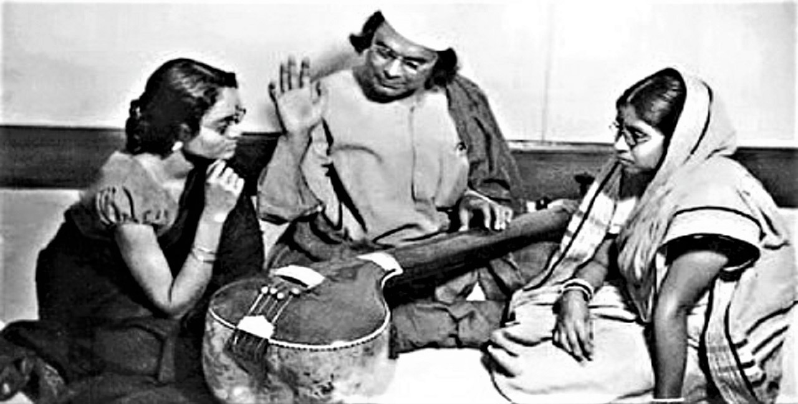

Kazi Nazrul Islam
National Poet of Bangladesh

Rebel poet Kazi Nazrul Islam teaching Nazrul sangeet
Here's a time line of Kazi Nazrul Islam's life:
- 1899 - Born in Burdwan, West Bengal, India
- 1908 - His father died in 1908 and at the age of ten, Nazrul took his father's place as a caretaker of the mosque to support his family. He also assisted teachers in the school. He later worked as the muezzin at the mosque
- 1910 - In 1910, Nazrul left the troupe and enrolled at the Searsole Raj High School in Raniganj and later In 1914, Nazrul studied in the Darirampur School (now Jatiya Kabi Kazi Nazrul Islam University) in Trishal, Mymensingh District
- 1917 - He joined the British Indian Army for serving in the Middle East (Mesopotamian campaign) during World War I
- 1920 - He published his first novel Bandhan-hara (বাঁধন-হারা, 'Freedom from Bondage') in 1920, on which he continued to work over the next seven years. His first collection of poems, which included "Bodhan", "Shat-il-Arab", "Kheya-parer Tarani" and "Badal Prater Sharab", received critical acclaim
- 1921 - On 18 June 1921, the day of the wedding, upon public insistence by Khan that the term "Nazrul must reside in Daulatpur after marriage" be included in the marriage contract, Nazrul walked away from the wedding ceremony
- 1922 - Nazrul reached the peak of his fame with Bidrohi (The Rebel), which remains his most famous work, winning the admiration of India's literary society for his description of a rebel. Published in the Bijli (বিজলী, "Lightning") magazine, the rebellious language and theme were well received, coinciding with the Non-Cooperation Movement – the first mass nationalist campaign of civil disobedience against British rule.
- 1923 - The Police raided the office of Dhumketu after it published "Anondomoyeer Agomone" ("আনন্দময়ীর আগমনে"), a political poem, in September 1922. Nazrul was arrested on 23 January 1923 and charged with sedition.
- 1923 - On 14 April, he was moved from Alipore Jail to a jail in Hooghly. He began a 40-day fast to protest mistreatment by the British jail superintendent, breaking his fast more than a month later and eventually being released from prison in December 1923.
- 1924 - During his visit to Comilla in 1921, Nazrul met a young Bengali Hindu woman, Pramila Devi, with whom he fell in love, and they married on 25 April 1924. Brahmo Samaj criticised Pramila, a member of the Brahmo Samaj, for marrying a Muslim. Muslim religious leaders criticized Nazrul for his marriage to a Hindu woman. He also was criticised for his writings. Despite controversy, Nazrul's popularity and reputation as the "rebel poet" increased significantly.
- 1928-35 - Between 1928 and 1935, he published 10 volumes containing 800 songs, of which more than 600 were based on classical ragas. Almost 100 were folk tunes after kirtans, and some 30 were patriotic songs
- 1942 - In 1942 at the age of 43, he began to suffer from an unknown disease, losing his voice and memory. A medical team in Vienna diagnosed the disease as Pick's disease, a rare incurable neurodegenerative disease
- 1976 - dies at the age of 77
Shall I, weary of struggles, rest in quiet, I am the rebel eternal, I raise my head beyond this world and, High, ever erect and alone!--The Rebel, Kazi Nazrul Islam.